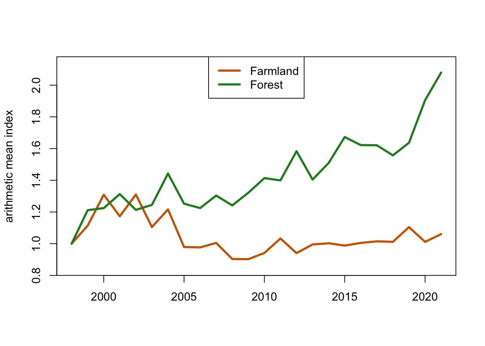
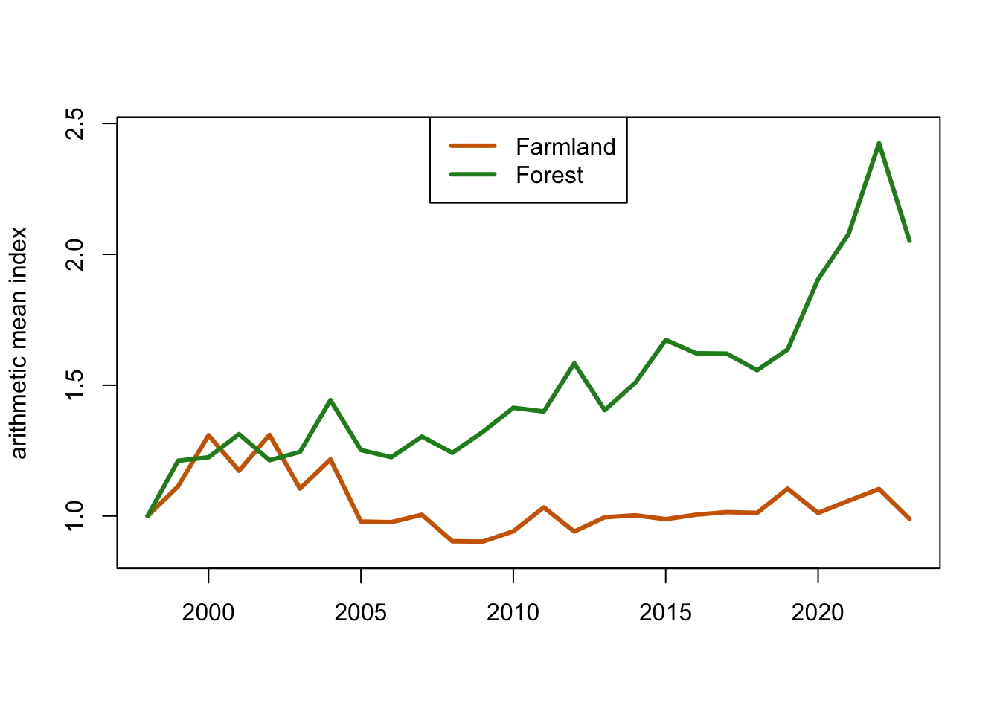

All countries in the European Union have to report population trends for their common farmland and forst birds. These data are collect by the European Bird Census Council and you can find them here.
In this exercise, we aim to produce such indices based on the data from the previous exercise.
The task seems straightforward. We have ten common farmland and ten common forst birds, each with their own trend. We just have to combine the trends of ten species into one common trend. An obvious way would be to simply add all the trends and then divide by the number of species. This would be the arithmetic mean of the species trends. Let’s do that.
First, here again the code that produces the index value for each speces for each year.
# Sum over all routes for each species and each year.
count.per.year <- tapply(birds$individualCount, list(birds$year, birds$species), sum)
# As in the previous exercise, we have re-order the species from alphabetic back to the original order. We use the same trick, the match-function.
count.per.year <- count.per.year[ , c(match(species.data$species, names(total.counts)))]
# Index for each species for each year with counts expressed relative to the count in the first year.
for (i in 1:ncol(count.per.year)){
count.per.year[ , i] <- (count.per.year[ , i]/nroutes)/(count.per.year[1 , i]/nroutes[1])
index <- count.per.year
}Next, we plot the time series of the arithmetic mean of the indices for farmland and forest birds.
# Compute the arithmetic mean by summing over all columns with farmland and forest birds, respectivley, and then dividing by the number of species.
farmland.arith <- rowSums(count.per.year[ , 1:10])/10
forest.arith <- rowSums(count.per.year[ , 11:20])/10
# Time series plots.
plot(1996:2018, farmland.arith,
ylim = c(0.8, max(farmland.arith) + 0.1), yaxs="i",
type="l", ylab="arithmetic mean index", xlab=NA,
col= "darkorange3", lwd=3)
lines(1996:2018, forest.arith,
type="l", ylab="arithmetic mean index", xlab=NA,
col= "forestgreen", lwd=3)
legend("top", legend = c("Farmland","Forest"), col= c("darkorange3", "forestgreen"), lty = 1, lwd = 3) 
Is it a good idea to compute arithmetic means for a multi-species index? Let us do a litte thought experiment. Consider two species. The population of the first one doubles from one year to the next, that is, it has an index of 2 in the second year. The population of the second one halfs, it has an index of 0.5 in the second year. The arithmetic mean equals \((2 + 0.5)/2 = 1.25\), suggesting a positve trend on average. It should be clear that this is misleading: the effects of one population doubling and the one halfing should cancel out each other!
To achieve this, we have to compute the geometric mean rather than the arithmetic mean. The geometric mean for our example equals \(\sqrt{2*0.5} = 1\), as desired. Please read the short section on indicators in the course book by Sutherland (2006, pages 80 - 83) for a slighlty longer discussion of this issue. You can download the relevant pages here.
Following Box 2.19 in Sutherland (2006)it is easy to compute the geometric mean index.
# Computing the geometric mean for farmland and forest birds.
farmland.geo <- exp(rowMeans(log(index[ , 1:10])))
forest.geo <- exp(rowMeans(log(index[ , 11:20])))
plot(1996:2018, farmland.geo,
ylim = c(0.8, max(farmland.geo) + 0.1), yaxs="i",
ylab="geometric mean index", xlab=NA,
type="l", col= "darkorange3", lwd=3)
lines(1996:2018, forest.geo,
type="l", col= "forestgreen", lwd=3)
legend("top", legend = c("Farmland","Forest"), col= c("darkorange3", "forestgreen"), lty = 1, lwd = 3) 
Question 4: What are two conclusions you can make from this figure? For farmland birds compare your result with the offical Swedish data that you can find here. If your results, differ from those on this website, what could be the reason?